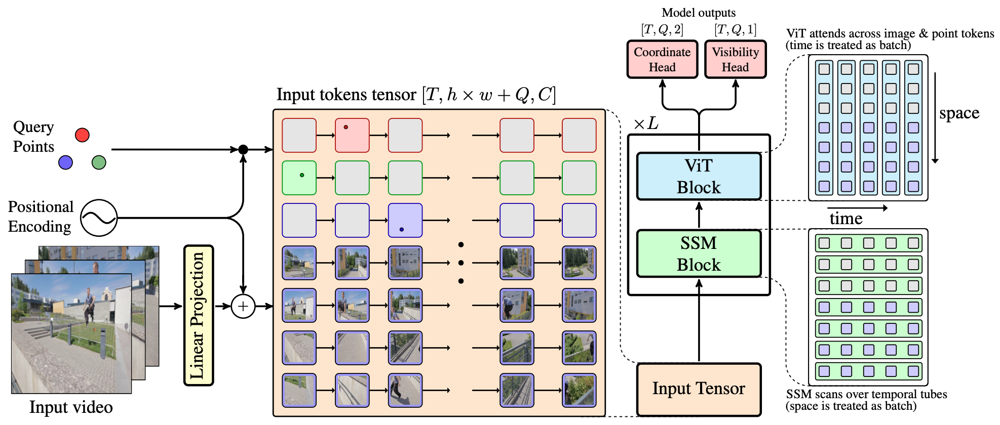

Architecture
TAPNext redefines point tracking as a sequence of masked token prediction task. Our approach is inspired by modern language models, treating point trajectories in video as sequences of tokens.
Tracking Any Point (TAP) in a video is a challenging computer vision problem with many demonstrated applications in robotics, video editing, and 3D reconstruction. Existing methods for TAP rely heavily on complex tracking-specific inductive biases and heuristics, limiting their generality and potential for scaling. To address these challenges, we present TAPNext, a new approach that casts TAP as sequential masked token decoding. Our model is causal, tracks in a purely online fashion, and removes tracking-specific inductive biases. This enables TAPNext to run with minimal latency, and removes the temporal windowing required by many existing state of art trackers. Despite its simplicity, TAPNext achieves a new state-of-the-art tracking performance among both online and offline trackers. Finally, we present evidence that many widely used tracking heuristics emerge naturally in TAPNext through end-to-end training.
TAPNext redefines point tracking as a sequence of masked token prediction task. Our approach is inspired by modern language models, treating point trajectories in video as sequences of tokens.
The TAP-Vid benchmark is a set of real and synthetic videos annotated with point tracks. The metric, Average Jaccard, measures both accuracy in estimating position and occlusion. Higher is better.
Method |
DAVIS |
Kinetics |
|---|---|---|
TAPTRv3 |
63.2 |
54.5 |
CoTracker3 |
63.8 |
55.8 |
TAPNext |
65.2 |
57.3 |
We compare TAPNext, Cotracker3, and BootsTAPIR on the DAVIS dataset. The results demonstrate TAPNext's superior performance in tracking accuracy and robustness, particularly in handling occlusions, large scale changes, and rapid motion.
| TAPNext | Cotracker3 | BootsTAPIR |
| TAPNext | Cotracker3 | BootsTAPIR |
| TAPNext | Cotracker3 | BootsTAPIR |
The videos below visualize self-attention maps between point tokens and image patches or other point tokens.
We invert the tracking problem - we assume the whole sequence of points and their occlusion flags are given to the model but it needs to predict future values of pixels. As we describe it in the paper, we simply add a linear pixel decoder head on top of the TAPNext image tokens outputs. Note that this is not a generative model - it is trained with a simple l2 pixel regression target. This result shows how TAPNext stores and retrieves visual information.
Our work is closely related to the following research:
TRecViT - A Recurrent Video Transformer.
BootsTAP - Bootstrapped Training for Tracking-Any-Point.
CoTracker3 - Simpler and Better Point Tracking by Pseudo-Labelling Real Videos.
TAPTR - Track Any Point TRansformers.